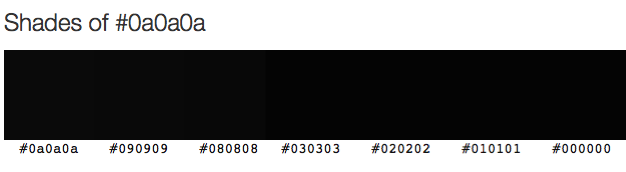

There are many shades of open access and they are all black
Open access has been linked to various colours, most notably green and gold. These colours are responsible for one of the most confusing thoughts I've come across in a long time: pre-green fool's-gold and post-green fair-gold.
Green and gold terminology is not good: it reinforces belief that open access can only happen in two ways, which limits the way we think. Cameron Neylon pointed this out in the Times Higher Education over a year ago.
If we want to achieve open and collaborative research, we need to shed a lot of historical baggage. Not only nonsense colours, but journal impact factors as measures of quality, citations to paywalled articles when open versions exist, and the AAAS*.
And then we need people to fill the voids. We need to work together to create a culture of open and collaborative research by changing mindsets and improving technology.
So I'm going to stick with one colour for open access - #OAOAOA - and I'd love it if you would do the same. Does it need to be more complicated?
Open access means unrestricted online access to peer-reviewed scholarly research.

*Only joking about the AAAS. Mostly. I am a little disappointed that they didn't have the courtesy to respond to this open letter.